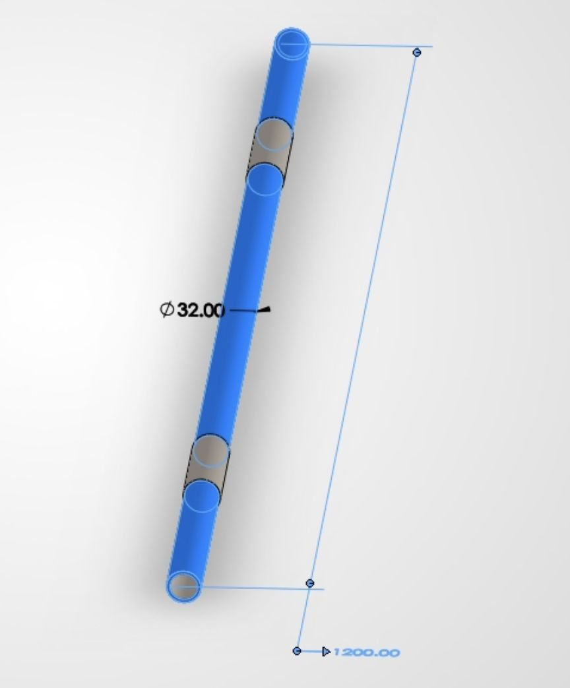
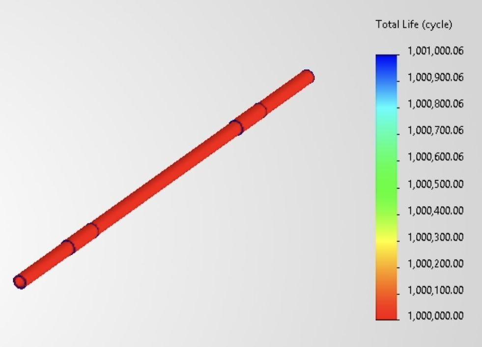
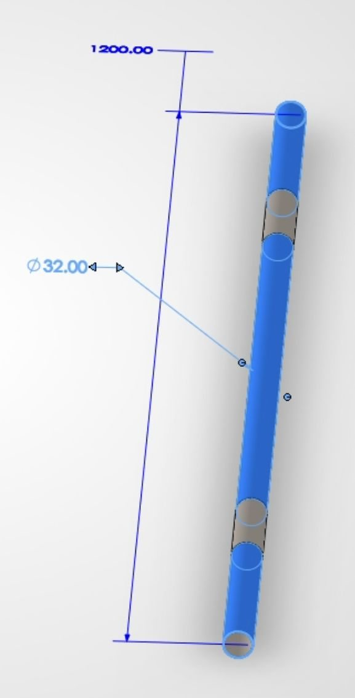
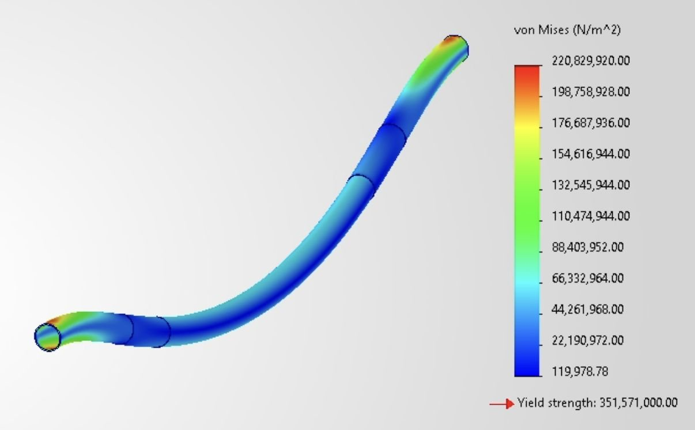
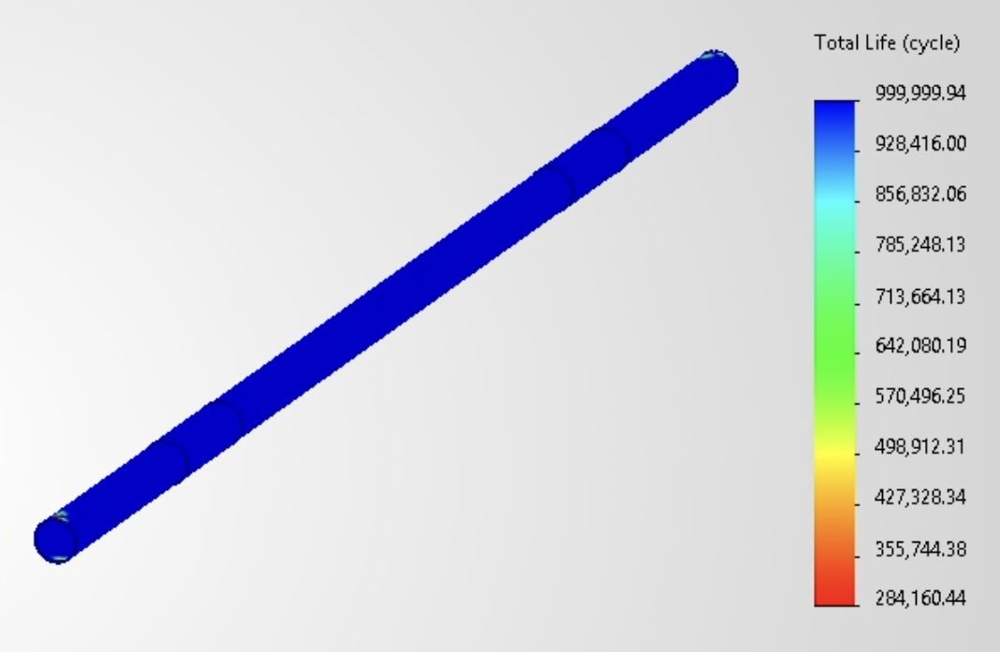

Evaluated a pull-up bar under a 250 lb user load, then modified geometry and material selection to reduce cost and material usage while preserving long-term durability.
250 lbUser load
10 yrUse target
1MOriginal life cycles
Original study
1112 N downward load, both bar ends fixed, zero-based fatigue loading, 208,572 cycle design target.



Cost and weight-conscious redesign
The original design was overbuilt, leaving room for material and cost reduction.



284,160
Minimum fatigue cycles after redesign. Above 10-year target.
Optimization choices
Increased inner diameter, reduced handle outer diameter, and changed material from AISI 1020 steel to A36 steel to improve manufacturability and reduce cost.